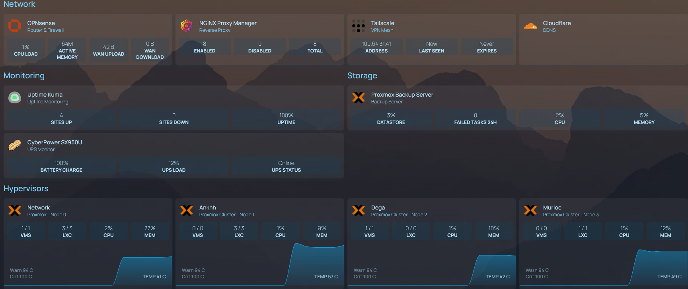

Monitoring Every Node
The Homepage dashboard has had Proxmox widget tiles for each cluster node since I first set it up — VM count, LXC count, CPU percentage, memory usage. Useful, but surface-level. What it hasn't had is temperature data or a live graph of anything. Today I fixed that.
Glances is a Python-based system monitoring tool that exposes a REST API when run in web server mode. Homepage has a native widget for it. The idea is straightforward: run Glances as a service on each node, point Homepage at each one, get live CPU temps and sparkline graphs on every tile. The execution was a little more interesting.
Installation across four nodes
The install command is the same on each node — pip3 install glances with the fastapi and uvicorn extras for the REST API backend. In practice, Glances 4.5.3 doesn't actually bundle those extras, so the first install succeeds but leaves you with a service that starts cleanly and refuses all connections. The systemd unit showed active, the curl showed nothing.
The fix is installing FastAPI and Uvicorn separately afterward.
On Debian 12 that introduces a second problem — pip can't
uninstall the system-managed copy of typing-extensions cleanly,
so the install errors out before it finishes. The workaround
is the --ignore-installed flag, which tells pip
to install the version it needs alongside the system copy
rather than trying to replace it. Not elegant, but it works,
and the alternative — a full virtual environment — is more
infrastructure to maintain across four machines.
When a service starts successfully but refuses connections, the most likely explanation is a missing dependency, not a firewall rule. Check the journal before checking the firewall.
The systemd service
Each node gets an identical unit file. Glances runs in web mode with the UI disabled — the REST API is all Homepage needs, and the full web interface is redundant overhead when you already have a dashboard. Port 61208 is the default and there's no reason to change it. The service is enabled and starts on boot.
Confirming it works is a single curl call against the CPU endpoint. If you get JSON back, the API is up. If you get a connection refused, something in the dependency chain didn't land correctly and the journal will tell you what.
Wiring it into Homepage
Homepage's Glances widget takes a URL, a version, and a
metric. The version field is where I hit the next snag.
Glances 4.x changed its API structure significantly from v3.
Homepage's widget was built against the older format, and
without explicitly setting version: 4 in the
config, it requests the wrong endpoint and throws a JavaScript
error about a missing percpu property. The fix is one line
in the YAML. The error message gives you nothing useful to
go on — it took a moment to connect the dots.
Once that was sorted, the metric I wanted was
sensor:Package id 0 — the CPU package temperature
from lm-sensors. Combined with chart: true, each
node tile now shows a live sparkline and a current temperature
in Celsius. The Proxmox widget stays above it for VM and LXC
counts. Both widgets poll independently so neither blocks the
other from loading.
A configuration mistake worth documenting
While cleaning up the YAML I noticed the Ankhh tile had been pointing at the wrong IP for both its Proxmox widget and its Glances widget — it was using Network's address instead of its own. The dashboard had been showing identical temperature readings for both nodes without me catching it. They share hardware so the numbers were close enough to look plausible. Fixed now, but it's a reminder that configuration files don't validate themselves. The dashboard looked correct. It wasn't.
If two monitoring tiles show suspiciously similar numbers, check that they're actually pointing at different targets.
What the dashboard shows now
Four node tiles, each with VM and LXC counts from Proxmox, CPU percentage and memory from the Proxmox API, CPU package temperature from Glances, and a live temperature graph that updates every 2.5 seconds.

The temperatures at idle — 41°C and 57°C on the two busier nodes, 42°C and 49°C on the lighter ones — are well within range and give a useful baseline to compare against when something is actually running hard. The Glances defaults flag warnings at 94°C and critical at 100°C, which I've since tightened to 80°C and 90°C via a config file on each node. More useful for catching a cooling problem before it becomes a stability problem.
The broader point
A dashboard that only shows you what Proxmox already knows about itself is a convenience, not a monitoring system. Adding an independent agent on each node means the dashboard can surface information Proxmox doesn't expose directly — thermals, disk I/O, network throughput, process-level detail — without depending on the Proxmox API for all of it.
It's also a more transferable pattern. Glances running as a systemd service on a Linux host, exposing metrics over HTTP, consumed by a dashboard — that's the same shape as most real monitoring stacks, just at homelab scale. Prometheus and Grafana follow the same model with more moving parts. Understanding the pattern at this level makes the larger version less intimidating.